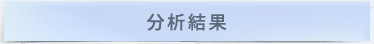

牡羊座
單身原因：因為熱情
脫單小秘密：你可以見面時適當展現自己的幽默感，不問太過私人的話題
健談且完全不怕生的牡羊男，能夠很自然地開啟許多新話題，即使是和女孩首度單獨見面也不用擔心冷場。但有時熱情過頭也很容易嚇到對方，讓對方才剛坐下不久就想尿遁逃跑。小訣竅是可以先多聆聽對方的談話，了解對方後，再找機會展開話題。
※以上結果僅供參考，用對方法勇敢追求才是脫單的訣竅！Fighting〜
想要更積極地擺脫單身，
不妨主動介紹一下你自己，
讓我們更進一步認識你
單身聯誼,婚友聯誼社 copyright @春天會館